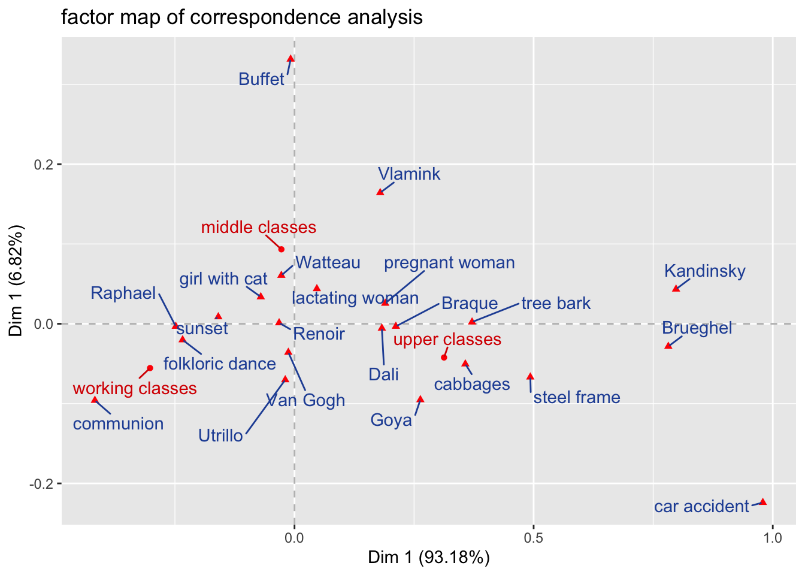
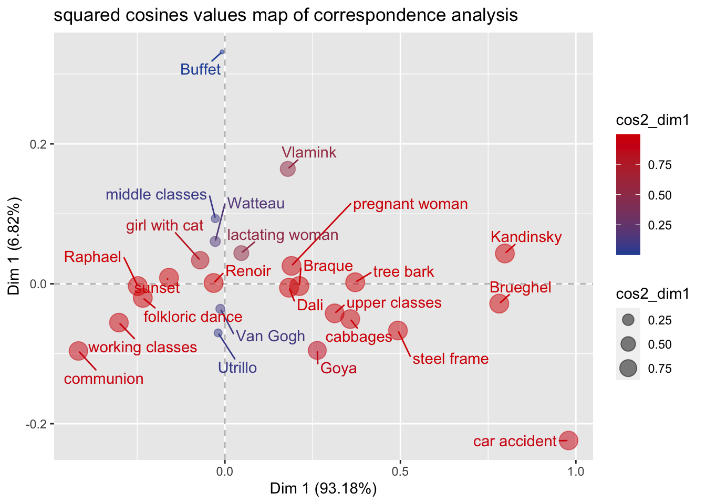
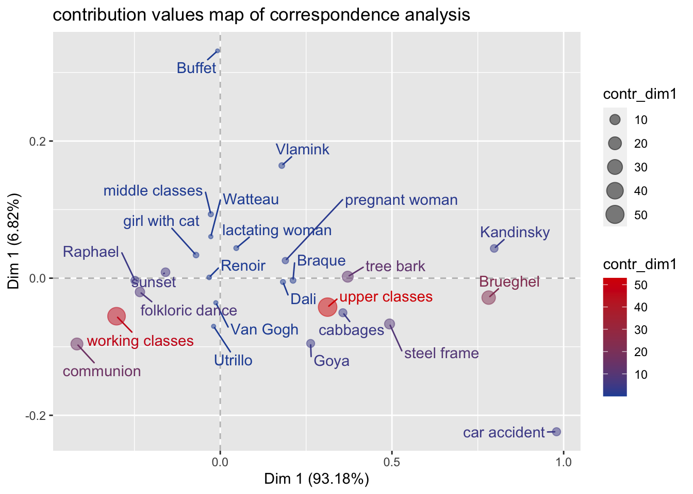

Correspondence analysis (ca) is a chi-square statistic-based, primarily geometric, descriptive or explorative method, that can be used to examine latent structures of multivariate data. Like cluster analysis, correspondence analysis is a data reduction procedure that, in contrast to cluster analysis and principal component analysis, is used in particular to describe categorical data that are grouped together in a contingency table (Blasius 2001). In contrast to cluster analysis, however, the characteristics or subjects are not assigned to a cluster, but are localized and related to each other in a space spanned by latent dimensions, which are represented by continuously scaled structural axes. The goal of ca, meanwhile, is to determine an optimal (for various, pragmatic reasons, usually two-dimensional) subspace of a multidimensional hyperspace. In the definition of this system the dimensions are to be chosen in such a way that with them a maximum of the variation of the data can be explained (Blasius 2001).
The ca is primarily interpreted graphically, while numerical interpretation tends to be of lower priority (Backhaus et al. 2016). The graphical representation possibilities are then probably also one of the main advantages of ca: Thus, ca can represent data structures clearly, graphically, reduce complexity on the basis of latent dimensions, and thus make complex, unknown relationships visible at a glance. The general maxim of exploratory data analysis “Let the data speak for themselves!” (Le Roux and Rouanet 2010, 4) is thus quite redeemed in the context of ca’s graphical representations. However, the comparatively catchy “geometric maps” (Lenger, Schneickert, and Schumacher 2013, 207) that result from the geometric solution of a ca, also harbor a number of interpretational hurdles that even Pierre Bourdieu was not always able to overcome without error (Blasius and Winkler 1989; Gollac 2015).
Data
The ca is, at least outside France, known and recognized as Bourdieu’s statistical method(Le Roux and Rouanet 2010, 4). In fact, however, it was not Pierre Bourdieu who invented this empirical method, often still perceived as “strange” (Hepp and Kergel 2014), but his close friend, the analyst and linguist Jean-Paul Benzécris, who first introduced the ca in France in the 1960s.
In order to stay close to the origins of ca, in the following we use data that Pierre Bourdieu (1987) already supplied to ca in his famous main work Distinction: A Social Critique of the Judgement of Taste: We explore the relationship between social class membership, aesthetic attitudes, and favorite painters (Bourdieu 2012, 822–23).
Data processing
To do this, we first load the corresponding contingency table into our workspace using the read_excel() function of the readxl package and specify (with the help of a “pipe”) as rownames the variable of the social classes that already has the name rownames in our excel-sheet.
In a further step, we print the contingency table (in transposed form for clarity) using the kable() function of the kableExtra package.
As we could see, the complexity of our 3x22 contingency table is so high that correlations between class position and corresponding, aesthetic settings and weaknesses for specific favorite painters are hardly or hardly to be inferred from the table for the naked eye. For this reason, we specify a ca. We load the package FactoMineR into our workspace and feed our data to the FactoMineR function CA() and store the results in the object ca. Since the automated graphs of the FactoMineR package are not publishable, especially for complex correspondence analyses, we set the graph argument to FALSE.
library(FactoMineR)ca <-CA(df, graph = F)ca
**Results of the Correspondence Analysis (CA)**
The row variable has 3 categories; the column variable has 22 categories
The chi square of independence between the two variables is equal to 115.082 (p-value = 1.008015e-08 ).
*The results are available in the following objects:
name description
1 "$eig" "eigenvalues"
2 "$col" "results for the columns"
3 "$col$coord" "coord. for the columns"
4 "$col$cos2" "cos2 for the columns"
5 "$col$contrib" "contributions of the columns"
6 "$row" "results for the rows"
7 "$row$coord" "coord. for the rows"
8 "$row$cos2" "cos2 for the rows"
9 "$row$contrib" "contributions of the rows"
10 "$call" "summary called parameters"
11 "$call$marge.col" "weights of the columns"
12 "$call$marge.row" "weights of the rows"
If we output the object ca, we see that our ca was based on a 3x22 contingency table whose row and column variables are statistically significantly related (p-value = 1.008015e-08). Furthermore, we see all storage locations of the central information concerning the specified ca. In order to determine the number of axes of the ca to be taken into account, we first have the eigenvalues and the proportions of the variances “explained” by the different axes of the ca output.
knitr::kable(as.data.frame(ca$eig), "pipe")
eigenvalue
percentage of variance
cumulative percentage of variance
dim 1
0.0624176
93.179969
93.17997
dim 2
0.0045685
6.820031
100.00000
The eigenvalues correspond to the amount of information each axis contains. The dimensions are ordered in decreasing order and ranked by the amount of variance explained in the final solution of the ca. Dimension 1 of our specified ca explains 93.18% of the variance, and dimension 2 explains 6.82% of the variance (Hjellbrekke 2018). The first two axes of the specified ca explain 100% of the variation in the contingency table fed to the ca. Accordingly, within the graphical representation of the geometric solution of ca, we extract the first two axes.
To do this, we use the mutate()- und select()-function of the dplyr-Package to create a new data-frame containing the coordinates (ca$row$coord) of the row and column profiles, as well as their squared cosines values (cos2) and contribution values (contrib). The former measures the extent of association between row and column categories and a particular dimension of ca, the latter indicates which row and column categories are most significant in explaining the variability of the data on which the contingency table is based. Row and column categories of low importance are characterized by the fact that they do not make a high contribution to any of the first dimensions of a ca (Le Roux and Rouanet 2010).
The two datasets ca_row and ca_col, which contain the extracted information of the CA, are joined line by line using the function rbind() and again specify the names of the line profiles in the column rownames for the following graphical representation.
Now we are ready to plot the graphical solution of the ca. For this we use the package ggplot2.
library(ggrepel)ggplot(ca_df, aes(`Dim 1`, `Dim 2`,color=type)) +#specify the x and y variablegeom_vline(xintercept =0, color="grey",linetype="dashed")+#add x-axisgeom_hline(yintercept =0, color="grey",linetype="dashed")+#add y-axisgeom_point(aes(shape=type),color ="red")+# add (red) points corresponding to the coordinates of the variables 'Dim 1' and 'Dim 2geom_text_repel(aes(label = rownames), min.segment.length =0, seed =42, box.padding =0.5,max.overlaps =Inf)+#avoid overlapping labelsscale_color_manual(values=c("#d80000", "#2450a4"))+#add manual color shadingtheme(legend.position ="none")+#hide legendggtitle("factor map of correspondence analysis") +#add main titlexlab("Dim 1 (93.18%)") +ylab("Dim 1 (6.82%)") #add axis titles

As indicated above, with respect to the interpretation of the graphical solution of a ca, there are some pitfalls that need to be considered. Carroll et al (1986) put it aptly like this: “[…]it is legitimate to interpret distances among elements of one set of points. […] It is also legitimate to interpret the relative positions of one point of one set with respect to all the points in the other set. Except in special cases, it is extremely dangerous to interpret the proximity of two points corresponding to different sets of points.(Carroll, Green, and Schaffer 1986, 46)”
With this in mind, the graphical solution of our ca can be interpreted as follows:
The relatively wide gaps between the three class profiles (working class, middle class, upper class) can be interpreted as an indication that the taste profiles of the three classes differ relatively strongly from each other, with the strongest difference in taste profiles between the working class and the upper class: members of the working class prefer a communion, a sunset and the depiction of a folkloric dance as motifs for a beautiful picture with above-average frequency. In contrast, members of the upper class favor less classical motifs such as a tree bark, a steel frame or cabbages. Finally, members of the middle class favor harmonious motifs such as a girl with cat, a nursing woman, or a pregnant woman more often than average. The interpretation of the correspondences between social classes and favored painters could be carried out analogously.
Attention: It would be unjustified to interpret the distance between motifs or painters and classes in the sense that most of the respondents who favor e.g. Kandinsky are also members of the upper class. Rather, we must assume that Kandinsky is simply more highly regarded, relatively speaking, among upper class respondents than is the case among middle or working class respondents (Carroll, Green, and Schaffer 1986).
In addition to the interpretation of the meaning of the relation of the row and column profiles, we are further interested in the squared cosines values (cos2) of the row and column profiles as well as their contribution values (contrib). As we mentioned above, the cos2 value measures the extent of association between row and column categories and a particular dimension of a ca. The contrib value further indicates which row and column categories are most important in explaining the variability of the data underlying the contingency table.
Since the first dimension of our ca captures over 93% of the variability in the data, we focus our exploration of the cos2 and contrib values only on the first axis of the ca.1
ggplot(ca_df, aes(`Dim 1`, `Dim 2`,color=cos2_dim1)) +#specify the x and y variablegeom_vline(xintercept =0, color="grey",linetype="dashed")+#add x-axisgeom_hline(yintercept =0, color="grey",linetype="dashed")+#add y-axisgeom_point(aes(size = cos2_dim1,color=cos2_dim1), alpha=.5)+# add (red) points corresponding to the coordinates of the variables 'Dim 1' and 'Dim 2geom_text_repel(aes(label = rownames), min.segment.length =0, seed =42, box.padding =0.5,max.overlaps =Inf)+#avoid overlapping labelsscale_color_gradient(low="#2450a4", high="#d80000")+#add manual color shadingggtitle("squared cosines values map of correspondence analysis") +#add main titlexlab("Dim 1 (93.18%)") +ylab("Dim 1 (6.82%)") #add axis titles

The possible values of cos2 are between 0 and 1. If a column or row feature has a cos2 value of 1, it is perfectly represented by a dimension. A cos2 of 0, on the other hand, would indicate that the feature is not represented by the corresponding dimension. As can be seen from the specified squared cosines values map of correspondence analysis, most of the features of the contigency table are clearly correlated with the first dimension and are accordingly acceptably represented by it.
ggplot(ca_df, aes(`Dim 1`, `Dim 2`,color=contr_dim1)) +#specify the x and y variablegeom_vline(xintercept =0, color="grey",linetype="dashed")+#add x-axisgeom_hline(yintercept =0, color="grey",linetype="dashed")+#add y-axisgeom_point(aes(size = contr_dim1,color=contr_dim1), alpha=.5)+# add (red) points corresponding to the coordinates of the variables 'Dim 1' and 'Dim 2geom_text_repel(aes(label = rownames), min.segment.length =0, seed =42, box.padding =0.5,max.overlaps =Inf)+#avoid overlapping labelsscale_color_gradient(low="#2450a4", high="#d80000")+#add manual color shadingggtitle("contribution values map of correspondence analysis") +#add main titlexlab("Dim 1 (93.18%)") +ylab("Dim 1 (6.82%)") #add axis titles

The contribution values map of correspondence analysis gives an idea of the pole of the dimensions to which the different column and row categories contribute. It can be seen that the working class makes a central contribution to the negative pole of the first dimension, while the upper class makes a large contribution to the positive pole of the first dimension. Furthermore, the specified plot shows that the 1st dimension is mainly determined by the opposition of working and upper class.
Conclusion
We have seen how to perform a correspondence analysis with R and how to interpret it in a basic way. Despite the comparatively simple interpretation, the ca has several challenges and pitfalls that need to be considered for a correct application. For a low-threshold introduction, I recommend reading Le Roux and Rouanet (2010) or, especially for social scientists, Hjellbrekke (2018).
In case you are a novice in R, the package factoextra offers a beginner-friendly introduction to the visualization of the results of a ca.
References
Backhaus, Klaus, Bernd Erichson, Rolf Weiber, and Wulff Plinke. 2016. “Korrespondenzanalyse.” In Multivariate Analysemethoden: Eine anwendungsorientierte Einführung, edited by Klaus Backhaus, Bernd Erichson, Wulff Plinke, and Rolf Weiber, 619–27. Berlin, Heidelberg: Springer Berlin Heidelberg. https://doi.org/10.1007/978-3-662-46076-4_17.
Blasius, Jörg. 2001. Korrespondenzanalyse. Internationale Standardlehrbücher der Wirtschafts- und Sozialwissenschaften. München: Oldenbourg.
Blasius, Jörg, and Joachim Winkler. 1989. “Gibt Es Die "Feinen Unterschiede"? Eine Empirische Ueberpruefung Der Bourdieuschen Theorie.” Gedruckt. Kölner Zeitschrift Für Soziologie Und Sozialpsychologie 41 (1): 72–94.
Bourdieu, Pierre. 1987. Distinction: A Social Critique of the Judgement of Taste. Reprint Edition. Cambridge, Mass: Havard university press.
———. 2012. Die feinen Unterschiede: Kritik der gesellschaftlichen Urteilskraft. Twenty-second. Frankfurt am Main: Suhrkamp.
Carroll, J. Douglas, Paul E. Green, and Catherine M. Schaffer. 1986. “Interpoint Distance Comparisons in Correspondence Analysis.”Journal of Marketing Research 23 (3): 271–80. https://doi.org/10.2307/3151485.
Gollac, Michael. 2015. “Eine Fröhliche Wissenschaft. Über Pierre Bourdieus Gebrauch Quantitativer Methoden.” In Pierre Bourdieu. Kunst Und Kultur. Kunst Und Künstlerisches Feld. Schriften Zur Kultursoziologie 4, edited by Franz Schultheis and Stephan Egger. Frankfurt am Main: Suhrkamp.
Hepp, Rolf-Dieter, and Sabine Kergel. 2014. “Epistemologische Wachsamkeit.” In Handbuch Bourdieu, edited by Boike Rehbein, Gernot Saalmann, and Hermann Schwengel, 94–99. Konstanz: UVK. https://doi.org/10.1007/978-3-476-01379-8_20.
Hjellbrekke, Johs. 2018. Multiple Correspondence Analysis for Social Sciences. New York: Routledge.
Le Roux, Brigitte, and Henry Rouanet. 2010. Multiple Correspondence Analysis. Quantitative Applications in the Social Sciences 163. Thousand Oaks, Calif: Sage Publications.
Lenger, Alexander, Christian Schneickert, and Florian Schumacher. 2013. “Pierre Bourdieus Konzeption des Habitus.” In Pierre Bourdieus Konzeption des Habitus: Grundlagen, Zugänge, Forschungsperspektiven, edited by Alexander Lenger, Christian Schneickert, and Florian Schumacher, 11–41. Wiesbaden: Springer Fachmedien. https://doi.org/10.1007/978-3-531-18669-6_1.
Footnotes
Of course, it is recommended to use the role of row and column categories for all other extracted dimensions as well. dimensions to be investigated and reported.↩︎